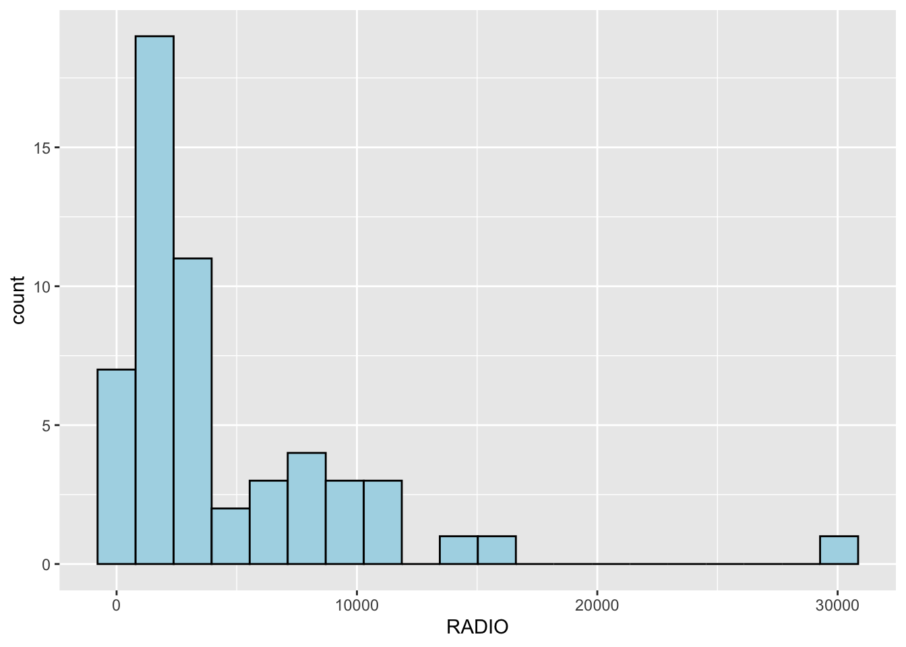
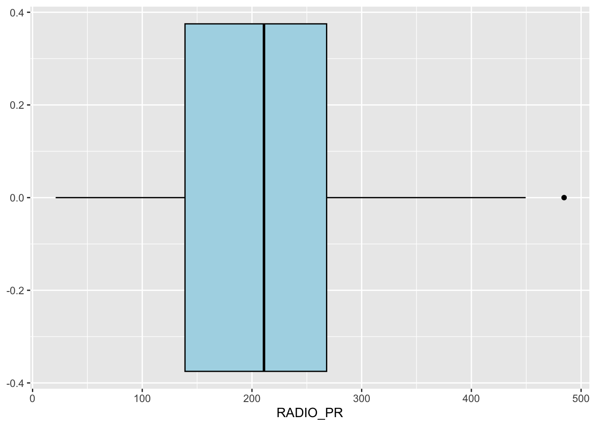
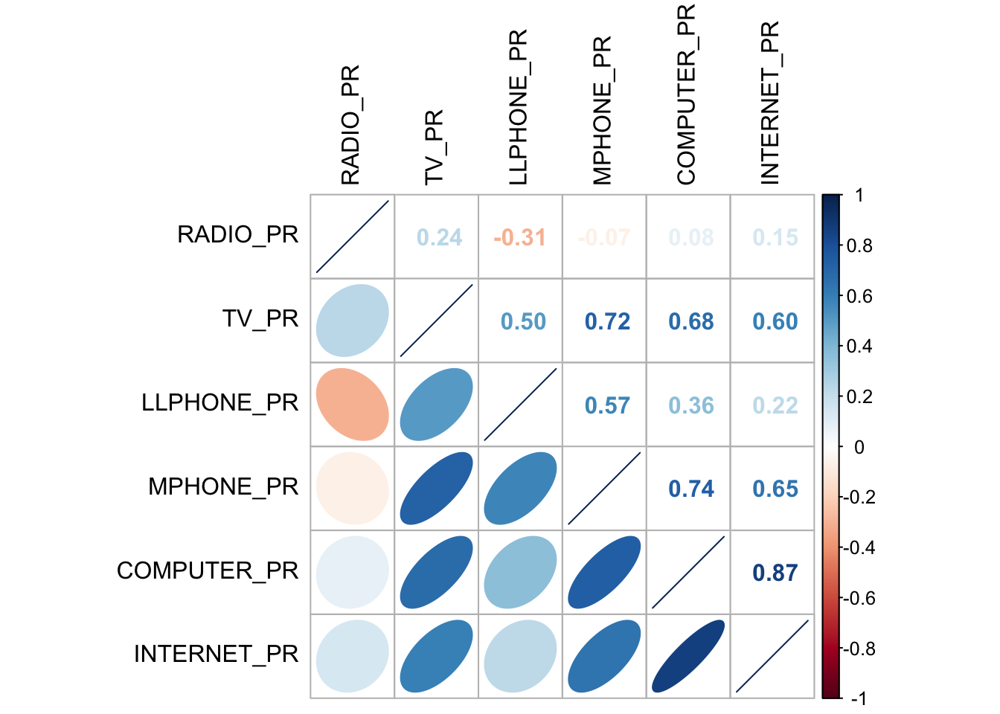

pacman::p_load(rgdal, spdep, tmap, sf,
ggpubr, cluster, factoextra, NbClust,
heatmaply, corrplot, psych, tidyverse)Hands-on Exercise 3: Geographical Segmentation with Spatially Constrained Clustering Techniques
Overview
In this exercise, I will gain hands-on experience on how to delineate homogeneous region by using geographically referenced multivariate data. There are two major analysis, namely:
hierarchical cluster analysis; and
spatially constrained cluster analysis.
Getting Started
The Analytical Question
We will delineate Shan State, Myanmar into homogeneous regions by using multiple Information and Communication technology (ICT) measures, namely: Radio, Television, Land line phone, Mobile phone, Computer, and Internet at home.
The Data
Two data sets will be used in this study. They are:
Myanmar Township Boundary Data (i.e. myanmar_township_boundaries) : This is a GIS data in ESRI shapefile format. It consists of township boundary information of Myanmar. The spatial data are captured in polygon features.
Shan-ICT.csv: This is an extract of The 2014 Myanmar Population and Housing Census Myanmar at the township level.
Both data sets are download from Myanmar Information Management Unit (MIMU)
Installing and Loading R Packages
We will install the necessary R packages into R and launch these R packages into R environment.
The R packages needed for this exercise are as follows:
Spatial data handling
- sf, rgdal and spdep
Attribute data handling
- tidyverse, especially readr, ggplot2 and dplyr
Choropleth mapping
- tmap
Multivariate data visualisation and analysis
- coorplot, ggpubr, and heatmaply
Cluster analysis
cluster
ClustGeo
The code chunks below installs and launches these R packages into R environment.
Data Import and Preparation
Importing geospatial data into R environment
We will import Myanmar Township Boundary GIS data and its associated attrbiute table into R environment.
The Myanmar Township Boundary GIS data is in ESRI shapefile format. It will be imported into R environment by using the st_read() function of sf.
The code chunk used are shown below:
shan_sf <- st_read(dsn = "data/geospatial",
layer = "myanmar_township_boundaries") %>%
filter(ST %in% c("Shan (East)", "Shan (North)", "Shan (South)"))Reading layer `myanmar_township_boundaries' from data source
`/Users/jonathanley/Dropbox/SMU Modules/ISSS624 - Applied Geospatial Analytics/Quarto/jonathanley1986/ISSS624/Hands-on_Ex/data/geospatial'
using driver `ESRI Shapefile'
Simple feature collection with 330 features and 14 fields
Geometry type: MULTIPOLYGON
Dimension: XY
Bounding box: xmin: 92.17275 ymin: 9.671252 xmax: 101.1699 ymax: 28.54554
Geodetic CRS: WGS 84We can view the content of the newly created shan_sf simple features data.frame by using the code chunk below.
shan_sfSimple feature collection with 55 features and 14 fields
Geometry type: MULTIPOLYGON
Dimension: XY
Bounding box: xmin: 96.15107 ymin: 19.29932 xmax: 101.1699 ymax: 24.15907
Geodetic CRS: WGS 84
First 10 features:
OBJECTID ST ST_PCODE DT DT_PCODE TS TS_PCODE
1 163 Shan (North) MMR015 Mongmit MMR015D008 Mongmit MMR015017
2 203 Shan (South) MMR014 Taunggyi MMR014D001 Pindaya MMR014006
3 240 Shan (South) MMR014 Taunggyi MMR014D001 Ywangan MMR014007
4 106 Shan (South) MMR014 Taunggyi MMR014D001 Pinlaung MMR014009
5 72 Shan (North) MMR015 Mongmit MMR015D008 Mabein MMR015018
6 40 Shan (South) MMR014 Taunggyi MMR014D001 Kalaw MMR014005
7 194 Shan (South) MMR014 Taunggyi MMR014D001 Pekon MMR014010
8 159 Shan (South) MMR014 Taunggyi MMR014D001 Lawksawk MMR014008
9 61 Shan (North) MMR015 Kyaukme MMR015D003 Nawnghkio MMR015013
10 124 Shan (North) MMR015 Kyaukme MMR015D003 Kyaukme MMR015012
ST_2 LABEL2 SELF_ADMIN ST_RG T_NAME_WIN T_NAME_M3
1 Shan State (North) Mongmit\n61072 <NA> State rdk;rdwf မိုးမိတ်
2 Shan State (South) Pindaya\n77769 Danu State yif;w, ပင်းတယ
3 Shan State (South) Ywangan\n76933 Danu State &GmiH ရွာငံ
4 Shan State (South) Pinlaung\n162537 Pa-O State yifavmif; ပင်လောင်း
5 Shan State (North) Mabein\n35718 <NA> State rbdrf; မဘိမ်း
6 Shan State (South) Kalaw\n163138 <NA> State uavm ကလော
7 Shan State (South) Pekon\n94226 <NA> State z,fcHk ဖယ်ခုံ
8 Shan State (South) Lawksawk <NA> State &yfapmuf ရပ်စောက်
9 Shan State (North) Nawnghkio\n128357 <NA> State aemifcsdK နောင်ချို
10 Shan State (North) Kyaukme\n172874 <NA> State ausmufrJ ကျောက်မဲ
AREA geometry
1 2703.611 MULTIPOLYGON (((96.96001 23...
2 629.025 MULTIPOLYGON (((96.7731 21....
3 2984.377 MULTIPOLYGON (((96.78483 21...
4 3396.963 MULTIPOLYGON (((96.49518 20...
5 5034.413 MULTIPOLYGON (((96.66306 24...
6 1456.624 MULTIPOLYGON (((96.49518 20...
7 2073.513 MULTIPOLYGON (((97.14738 19...
8 5145.659 MULTIPOLYGON (((96.94981 22...
9 3271.537 MULTIPOLYGON (((96.75648 22...
10 3920.869 MULTIPOLYGON (((96.95498 22...Since shan_sf is conformed to tidy framework, we can also glimpse() to reveal the data type of it's fields.
glimpse(shan_sf)Rows: 55
Columns: 15
$ OBJECTID <dbl> 163, 203, 240, 106, 72, 40, 194, 159, 61, 124, 71, 155, 101…
$ ST <chr> "Shan (North)", "Shan (South)", "Shan (South)", "Shan (Sout…
$ ST_PCODE <chr> "MMR015", "MMR014", "MMR014", "MMR014", "MMR015", "MMR014",…
$ DT <chr> "Mongmit", "Taunggyi", "Taunggyi", "Taunggyi", "Mongmit", "…
$ DT_PCODE <chr> "MMR015D008", "MMR014D001", "MMR014D001", "MMR014D001", "MM…
$ TS <chr> "Mongmit", "Pindaya", "Ywangan", "Pinlaung", "Mabein", "Kal…
$ TS_PCODE <chr> "MMR015017", "MMR014006", "MMR014007", "MMR014009", "MMR015…
$ ST_2 <chr> "Shan State (North)", "Shan State (South)", "Shan State (So…
$ LABEL2 <chr> "Mongmit\n61072", "Pindaya\n77769", "Ywangan\n76933", "Pinl…
$ SELF_ADMIN <chr> NA, "Danu", "Danu", "Pa-O", NA, NA, NA, NA, NA, NA, NA, NA,…
$ ST_RG <chr> "State", "State", "State", "State", "State", "State", "Stat…
$ T_NAME_WIN <chr> "rdk;rdwf", "yif;w,", "&GmiH", "yifavmif;", "rbdrf;", "uavm…
$ T_NAME_M3 <chr> "မိုးမိတ်", "ပင်းတယ", "ရွာငံ", "ပင်လောင်း", "မဘိမ်း", "ကလော", "ဖယ်ခုံ", "…
$ AREA <dbl> 2703.611, 629.025, 2984.377, 3396.963, 5034.413, 1456.624, …
$ geometry <MULTIPOLYGON [°]> MULTIPOLYGON (((96.96001 23..., MULTIPOLYGON (…Importing aspatial data into R environment
The csv file will be import using read_csv function of readr package.
The code chunks used are shown below:
ict <- read_csv ("data/aspatial/Shan-ICT.csv", show_col_types = FALSE)The attribute data set is called ict. It is saved in R's * tibble data.frame* format.
The code chunk below reveal the summary statistics of ict data.frame:
summary(ict) District Pcode District Name Township Pcode Township Name
Length:55 Length:55 Length:55 Length:55
Class :character Class :character Class :character Class :character
Mode :character Mode :character Mode :character Mode :character
Total households Radio Television Land line phone
Min. : 3318 Min. : 115 Min. : 728 Min. : 20.0
1st Qu.: 8711 1st Qu.: 1260 1st Qu.: 3744 1st Qu.: 266.5
Median :13685 Median : 2497 Median : 6117 Median : 695.0
Mean :18369 Mean : 4487 Mean :10183 Mean : 929.9
3rd Qu.:23471 3rd Qu.: 6192 3rd Qu.:13906 3rd Qu.:1082.5
Max. :82604 Max. :30176 Max. :62388 Max. :6736.0
Mobile phone Computer Internet at home
Min. : 150 Min. : 20.0 Min. : 8.0
1st Qu.: 2037 1st Qu.: 121.0 1st Qu.: 88.0
Median : 3559 Median : 244.0 Median : 316.0
Mean : 6470 Mean : 575.5 Mean : 760.2
3rd Qu.: 7177 3rd Qu.: 507.0 3rd Qu.: 630.5
Max. :48461 Max. :6705.0 Max. :9746.0 Derive new variables using dplyr package
The unit of measurement of the values are number of household. Using these values directly will be bias by the underlying total number of households. In general, the townships with relatively higher total number of households will also have higher number of households owning radio, TV, etc.
In order to overcome this problem, we will derive the penetration rate of each ICT variable by using the code chunk below.
ict_derived <- ict %>%
mutate(`RADIO_PR` = `Radio`/`Total households`*1000) %>%
mutate(`TV_PR` = `Television`/`Total households`*1000) %>%
mutate(`LLPHONE_PR` = `Land line phone`/`Total households`*1000) %>%
mutate(`MPHONE_PR` = `Mobile phone`/`Total households`*1000) %>%
mutate(`COMPUTER_PR` = `Computer`/`Total households`*1000) %>%
mutate(`INTERNET_PR` = `Internet at home`/`Total households`*1000) %>%
rename(`DT_PCODE` =`District Pcode`,`DT`=`District Name`,
`TS_PCODE`=`Township Pcode`, `TS`=`Township Name`,
`TT_HOUSEHOLDS`=`Total households`,
`RADIO`=`Radio`, `TV`=`Television`,
`LLPHONE`=`Land line phone`, `MPHONE`=`Mobile phone`,
`COMPUTER`=`Computer`, `INTERNET`=`Internet at home`) The code chunk below shows the summary statistics of the newly derived penetration rates.
summary(ict_derived) DT_PCODE DT TS_PCODE TS
Length:55 Length:55 Length:55 Length:55
Class :character Class :character Class :character Class :character
Mode :character Mode :character Mode :character Mode :character
TT_HOUSEHOLDS RADIO TV LLPHONE
Min. : 3318 Min. : 115 Min. : 728 Min. : 20.0
1st Qu.: 8711 1st Qu.: 1260 1st Qu.: 3744 1st Qu.: 266.5
Median :13685 Median : 2497 Median : 6117 Median : 695.0
Mean :18369 Mean : 4487 Mean :10183 Mean : 929.9
3rd Qu.:23471 3rd Qu.: 6192 3rd Qu.:13906 3rd Qu.:1082.5
Max. :82604 Max. :30176 Max. :62388 Max. :6736.0
MPHONE COMPUTER INTERNET RADIO_PR
Min. : 150 Min. : 20.0 Min. : 8.0 Min. : 21.05
1st Qu.: 2037 1st Qu.: 121.0 1st Qu.: 88.0 1st Qu.:138.95
Median : 3559 Median : 244.0 Median : 316.0 Median :210.95
Mean : 6470 Mean : 575.5 Mean : 760.2 Mean :215.68
3rd Qu.: 7177 3rd Qu.: 507.0 3rd Qu.: 630.5 3rd Qu.:268.07
Max. :48461 Max. :6705.0 Max. :9746.0 Max. :484.52
TV_PR LLPHONE_PR MPHONE_PR COMPUTER_PR
Min. :116.0 Min. : 2.78 Min. : 36.42 Min. : 3.278
1st Qu.:450.2 1st Qu.: 22.84 1st Qu.:190.14 1st Qu.:11.832
Median :517.2 Median : 37.59 Median :305.27 Median :18.970
Mean :509.5 Mean : 51.09 Mean :314.05 Mean :24.393
3rd Qu.:606.4 3rd Qu.: 69.72 3rd Qu.:428.43 3rd Qu.:29.897
Max. :842.5 Max. :181.49 Max. :735.43 Max. :92.402
INTERNET_PR
Min. : 1.041
1st Qu.: 8.617
Median : 22.829
Mean : 30.644
3rd Qu.: 41.281
Max. :117.985 Exploratory Data Analysis (EDA)
EDA using statistical graphics
We can plot the distribution of the variables (i.e. Number of households with radio) by using appropriate Exploratory Data Analysis (EDA) as shown in the code chunk below.
ggplot(data=ict_derived,
aes(x=`RADIO`)) +
geom_histogram(bins=20,
color="black",
fill="light blue")
Boxplot is useful to detect if there are outliers.
ggplot(data=ict_derived,
aes(x=`RADIO`)) +
geom_boxplot(color="black",
fill="light blue")
We will also plotting the distribution of the newly derived variables (i.e. Radio penetration rate) by using the code chunk below.
ggplot(data=ict_derived,
aes(x=`RADIO_PR`)) +
geom_histogram(bins=20,
color="black",
fill="light blue")The code chunk below is used to plot the boxplot.
ggplot(data=ict_derived,
aes(x=`RADIO_PR`)) +
geom_boxplot(color="black",
fill="light blue")
The code chunks below are used to create the data visualisation. They consist of two main parts. First, we will create the individual histograms using the code chunk below.
radio <- ggplot(data=ict_derived,
aes(x= `RADIO_PR`)) +
geom_histogram(bins=20,
color="black",
fill="light blue")
tv <- ggplot(data=ict_derived,
aes(x= `TV_PR`)) +
geom_histogram(bins=20,
color="black",
fill="light blue")
llphone <- ggplot(data=ict_derived,
aes(x= `LLPHONE_PR`)) +
geom_histogram(bins=20,
color="black",
fill="light blue")
mphone <- ggplot(data=ict_derived,
aes(x= `MPHONE_PR`)) +
geom_histogram(bins=20,
color="black",
fill="light blue")
computer <- ggplot(data=ict_derived,
aes(x= `COMPUTER_PR`)) +
geom_histogram(bins=20,
color="black",
fill="light blue")
internet <- ggplot(data=ict_derived,
aes(x= `INTERNET_PR`)) +
geom_histogram(bins=20,
color="black",
fill="light blue")The ggarange() function of ggpubr package is used to group these histograms together.
ggarrange(radio, tv, llphone, mphone, computer, internet,
ncol = 3,
nrow = 2)
EDA using choropleth map
Joining geospatial data with aspatial data
Before we can prepare the choropleth map, we need to combine both the geospatial data object (i.e. shan_sf) and aspatial data.frame object (i.e. ict_derived) into one. This will be performed by using the left_join function of dplyr package. The shan_sf simple feature data.frame will be used as the base data object and the ict_derived data.frame will be used as the join table.
The code chunks below is used to perform the task. The unique identifier used to join both data objects is TS_PCODE.
shan_sf <- left_join(shan_sf,
ict_derived,
by=c("TS_PCODE"="TS_PCODE"))Preparing a choropleth map
The code chunks below are used to prepare the choroplethby using the qtm() function of tmap package.
qtm(shan_sf, "RADIO_PR")In order to reveal the distribution shown in the choropleth map above are bias to the underlying total number of households at the townships, we will create two choropleth maps, one for the total number of households (i.e. TT_HOUSEHOLDS.map) and one for the total number of household with Radio (RADIO.map) by using the code chunk below.
TT_HOUSEHOLDS.map <- tm_shape(shan_sf) +
tm_fill(col = "TT_HOUSEHOLDS",
n = 5,
style = "jenks",
title = "Total households") +
tm_borders(alpha = 0.5)
RADIO.map <- tm_shape(shan_sf) +
tm_fill(col = "RADIO",
n = 5,
style = "jenks",
title = "Number Radio ") +
tm_borders(alpha = 0.5)
tmap_arrange(TT_HOUSEHOLDS.map, RADIO.map,
asp=NA, ncol=2)Now we will plot the choropleth maps showing the dsitribution of total number of households and Radio penetration rate by using the code chunk below.
tm_shape(shan_sf) +
tm_polygons(c("TT_HOUSEHOLDS", "RADIO_PR"),
style="jenks") +
tm_facets(sync = TRUE, ncol = 2) +
tm_legend(legend.position = c("right", "bottom"))+
tm_layout(outer.margins=0, asp=0)Correlation Analysis
In this section, we will learn how to use corrplot.mixed() function of corrplot package to visualise and analyse the correlation of the input variables.
cluster_vars.cor = cor(ict_derived[,12:17])
corrplot.mixed(cluster_vars.cor,
lower = "ellipse",
upper = "number",
tl.pos = "lt",
diag = "l",
tl.col = "black")
Hierarchy Cluster Analysis
In this section, we will learn how to perform hierarchical cluster analysis. The analysis consists of four major steps: